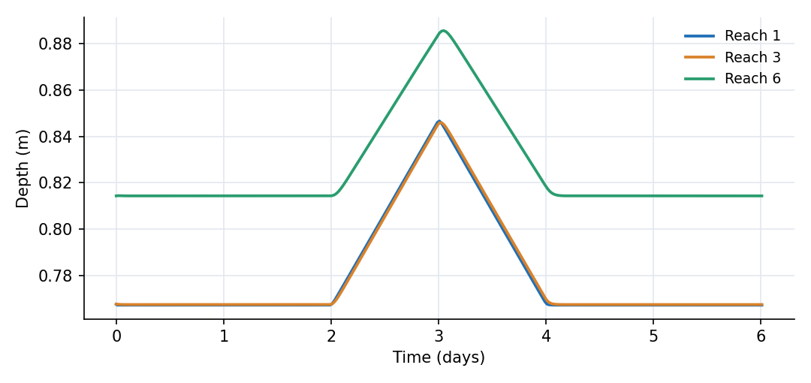
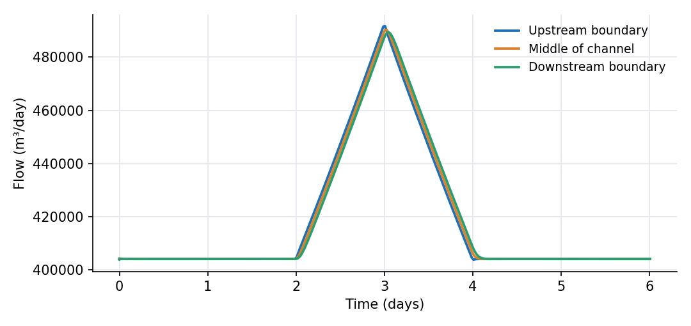

What this model represents
A 12 km trapezoidal channel is divided into six equal storage cells. The bed falls 2 m through every 2 km cell, a slope of 0.001. The boundary elevations are extrapolated half a cell beyond the first and last cell centres. Initial depths are the rounded steady-flow values, about 0.77 m through Reach_05 and 0.81 m in Reach_06. After a two-day warm-up, the upstream water level rises by 0.1 m and returns to its starting value over two days.
This compact model isolates hydraulic routing. It shows how a change in stage creates a flow pulse, how the pulse fills each channel cell, and how resistance and storage change its timing and magnitude as it moves downstream.
How it works
Each channel block stores a water volume S in a trapezoidal cross-section. For length L, bottom width b, side slope z and water depth d,
S = L · (b + z·d) · d
which the block inverts to calculate depth. Water-surface elevation is the bed elevation plus depth.
Every connection uses the current open_channel.json Manning expression. For positive downstream head difference,
Q = 86400 · (1/n) · A · R^(2/3) · sqrt((h_s − h_e)/L_link)
where Q is in m³/day, n is the average Manning roughness, A is the upstream flow cross-sectional area, R is its hydraulic radius, h_s and h_e are the source and destination water-surface elevations, and L_link is the average length of the connected cells. The factor 86400 converts m³/s to m³/day.
The upstream boundary supplies a prescribed stage. The downstream boundary is fixed at -10.8 m, equal to 0.2 m depth above the bed line extrapolated 1 km beyond the final cell centre. Positive flow is always downstream: boundary to Reach_01, through the numbered reaches, and from Reach_06 to the downstream boundary.
What to look for in the results
- Reach_01 peaks at day 3.008, Reach_03 at day 3.028 and Reach_06 at day 3.048. The approximately one-hour lag from the first to the last reach is the translation time of the stage disturbance through the 12 km channel.
- The rise above the day-2 depth decreases from about 0.079 m in Reach_01 to 0.071 m in Reach_06 as channel storage attenuates the disturbance.
- Base flow is about 404,000 m³/day (4.68 m³/s). The pulse peaks at 492,000 m³/day (5.69 m³/s) at the upstream boundary and 489,000 m³/day (5.66 m³/s) at the downstream boundary.
- The upstream flow changes more sharply than the middle and downstream flows. The difference between inflow and outflow is the rate of change of water stored in the six reaches.
- After the boundary returns to its original stage, the reaches continue draining until the original gradually varied profile is restored.
Assumptions and limitations
- Each 2 km reach is a single, level storage cell whose representative bed elevation is assigned at its centre. Finer spatial resolution is needed for rapidly varied flow.
- The link uses a one-direction Manning formulation based on the water-surface gradient. Backwater can reduce the gradient, but the standard trapezoidal link is not a full Saint-Venant momentum solver.
- Roughness and geometry are uniform. There are no lateral inflows, losses, structures, sediment processes or floodplain storage.
- The upstream stage pulse is synthetic and the downstream water level is fixed.
Model diagram
Hover a block or link to see its name and type. Arrows show the positive flow direction.
Components
Click a component to see every property set in the model file, with units and meaning.
Blocks 8
Storage compartments: each holds water (and dissolved or particulate mass) and has a state that evolves in time.
Upstream_Boundarytime_variable_fixed_headA prescribed water-surface elevation from upstream_stage.csv, rising from 1.20 m to 1.30 m and returning to 1.20 m. The boundary lies half a cell upstream of Reach_01, where the extrapolated bed is at 1.0 m.
upstream_stage.csv, rising from 1.20 m to 1.30 m and returning to 1.20 m. The boundary lies half a cell upstream of Reach_01, where the extrapolated bed is at 1.0 m.time_variable_fixed_head: Time-variable fixed-head boundary
| Property | Value | Unit | Meaning |
|---|---|---|---|
| Head (m) | upstream_stage.csv | ||
| Initial Storage | 1000000000 | m3 |
6 × Trapezoidal Channel SegmentTrapezoidal Channel Segment · open_channelSix 2 km reaches with a 2 m bottom width, 2H:1V side slopes, Manning n = 0.011 and a bed slope of 0.001.
Reach_01, Reach_02, Reach_03, Reach_04, Reach_05, Reach_06
Showing properties of Reach_01.
Trapezoidal Channel Segment: Trapezoidal Channel Segment
| Property | Value | Unit | Meaning |
|---|---|---|---|
| Base Width | 2 | m | The width of the bottom (flat) portion of the trapezoidal channel cross-section. |
| Side Slope | 2 | The horizontal to vertical ratio of the sloped sides (e.g., 2 means 2 horizontal to 1 vertical). | |
| Manning's Roughness Coefficient | 0.011 | Roughness coefficient used in Manning's equation to estimate flow resistance. | |
| Bottom Elevation | 0 | m | Elevation of the channel bottom relative to the model’s vertical datum. |
| Segment length | 2000 | m | |
| Initial Water Depth | 0.7675 | m | Depth of water in the channel segment. If depth is initially unknown, it is estimated based on storage. |
| Inflow multiplier | 1 | Scales the inflow time series (for example an uncertain lateral inflow estimate). 1 uses the series as given. | |
| Obstacle height | 0 | m | The water depth below which the flow ceases |
| Area of agriculural land | 0 | m2 | |
| Area of non-agriculural activity | 0 | m2 |
Downstream_Boundaryfixed_headA fixed water-surface elevation of -10.8 m, corresponding to 0.2 m depth over the bed extrapolated half a cell beyond Reach_06.
fixed_head: Fixed-head boundary
| Property | Value | Unit | Meaning |
|---|---|---|---|
| Head | -10.8 | m | |
| Initial Storage | 100000 | m3 |
Links 7
Connections that move water (and the mass it carries) between blocks.
Upstream_InflowFixedhead_to_channel · open_channelManning flow from the prescribed upstream stage into Reach_01. Positive flow enters the modeled channel.
Fixedhead_to_channel: Link from a fixed head boundary to a channel segment
Flow_01_02Trapezoidal_Channel_link · open_channelFive internal Manning links, positive downstream from the lower-numbered reach to the higher-numbered reach.
Trapezoidal_Channel_link: Link from a channel segment to another
Flow_02_03Trapezoidal_Channel_link · open_channelFive internal Manning links, positive downstream from the lower-numbered reach to the higher-numbered reach.
Trapezoidal_Channel_link: Link from a channel segment to another
Flow_03_04Trapezoidal_Channel_link · open_channelFive internal Manning links, positive downstream from the lower-numbered reach to the higher-numbered reach.
Trapezoidal_Channel_link: Link from a channel segment to another
Flow_04_05Trapezoidal_Channel_link · open_channelFive internal Manning links, positive downstream from the lower-numbered reach to the higher-numbered reach.
Trapezoidal_Channel_link: Link from a channel segment to another
Flow_05_06Trapezoidal_Channel_link · open_channelFive internal Manning links, positive downstream from the lower-numbered reach to the higher-numbered reach.
Trapezoidal_Channel_link: Link from a channel segment to another
Downstream_Outflowchannel2fixed · open_channelManning flow from Reach_06 to the fixed downstream stage, positive out of the modeled channel.
channel2fixed: Link from a channel segment to fixed head boundary
Input files
upstream_stage.csv | Prescribed upstream water-surface elevation (m) versus time (day). After a two-day warm-up, a triangular 0.10 m stage pulse rises to its peak on day 3 and ends on day 4. |
Simulation settings
| Start time | 0 |
| End time | 6 |
| Initial time step | 0.001 |
| Write interval (steps) | 1 |
Results
Produced by running the downloaded model unchanged.

